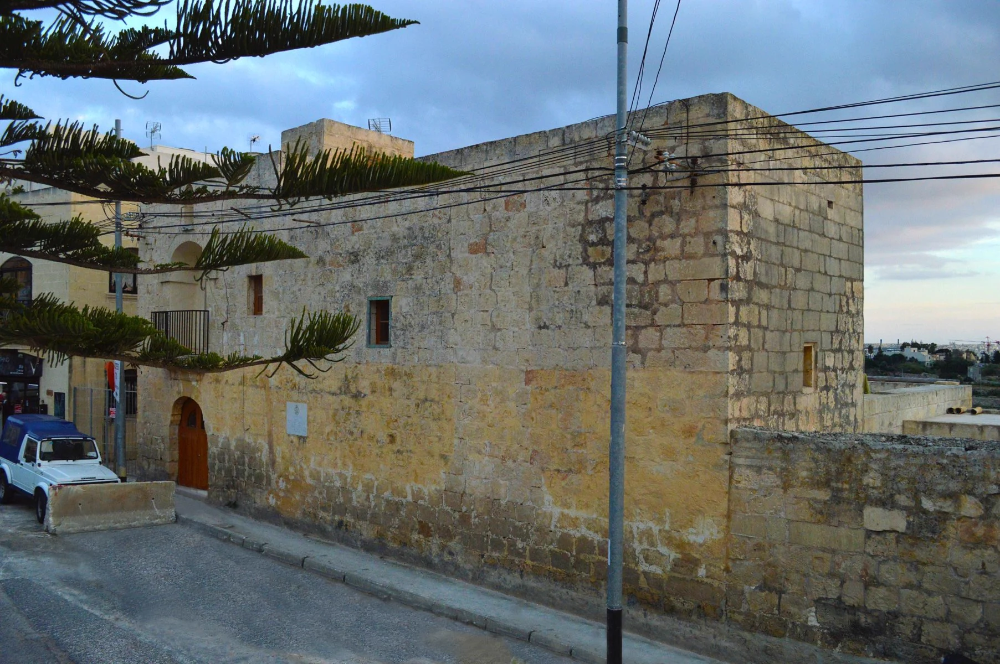

Address-level checks decide pavement, gradient, parking, deliveries and exposure. A locality centroid cannot.
KAPPARA · SAN ĠWANNStone layer.
Stone layer.
Urban seam.
Kappara's residential streets, the Regional Road junction and wider San Ġwann services touch the same urban fabric. They should never be flattened into one interchangeable place.

READ THE NEIGHBOURHOOD IN LAYERS
Kappara is specific. Its neighbours remain separate.
The Address Registrar lists Kappara within San Ġwann. That administrative relationship supports a local edition, but it does not move every San Ġwann square, Gżira service or Swatar street into Kappara.
A major piece of infrastructure, not the identity of every street and not evidence of the same noise or access everywhere.
The council and everyday-service context. Named gardens and squares still need exact-location checks.
Useful orientation only. Their businesses, stops and streets are not silently relabelled as Kappara.
ONE LOCAL HERITAGE ANCHOR
Ta' Xindi holds a longer layer of the area.
San Ġwann Local Council records the farmhouse as Captain Vincenzo Borg's headquarters while Maltese troops blockaded French forces in 1798–1800. Government curriculum material identifies it as an 18th-century farmhouse and insurgent outpost.
The building is presented as documented heritage. This edition makes no claim about public entry, opening hours or an interior visit.
Vernacular limestone
The image gives a specific architectural subject—not a generic promise about every Kappara home.
Blockade headquarters
The council links Ta' Xindi to Vincenzo Borg and the 1798–1800 blockade. The claim is kept to that sourced scope.
Inspect the real street
Check access, traffic, wires, pavement and parking at the actual address. The 2015 photograph and centroid prove none of them today.
EVERYDAY ORIENTATION
Practical anchors, with live details left live.
Public sources can establish responsibility and current operator references. Hours, departures, distances and property-specific access remain live checks.
San Ġwann Local Council
Use the council for current public-space and local-service information. Wider San Ġwann references are labelled as such.
Gżira Health Centre
Primary HealthCare currently includes Kappara in this centre's catchment. Check live services before a visit.
Routes 24 and N120
The operator currently lists Il-Kappara stops. This does not establish a nearest stop or journey time from a home.
Verify the last metres
Dense urban context can change block by block. Confirm footways, crossings, slopes and evening conditions directly.
TRANSPORT WITHOUT INVENTED ROUTES
A junction is context, not a shortcut.
Transport Malta records the Kappara Junction project as completed in late 2017. That establishes infrastructure history, not a current accessibility audit.
24 · N120
Route pages name Il-Kappara stops. Frequencies, first and last departures and disruptions stay on the live operator pages.
Check present conditions
A 2017 report mentions a pedestrian underpass. Current surface, lighting and access need a fresh on-site or operator check.
No straight connector
This edition draws no walking line, drive line, ferry leg, distance or time from the broad locality centroid.
The exact Kappara register filter currently has no restaurant records.
The MTA result on 26 October 2026 said “No records match your filters.” That is an evidence gap—not proof that no food businesses exist. A future edition may add clearly separated San Ġwann or Gżira options only after checking each licence, operator and exact address.
Read one building well
Ta' Xindi provides a specific local history thread without turning a residence into an attraction or promising access.
Use live council listings
San Ġwann gardens and squares belong in a wider-context block until the exact location and current access are confirmed.
Plan from real endpoints
Use the live journey planner with an exact permitted start and destination rather than an editorial centroid.
Open Kappara's wider urban context only when you need it.
The map frames Kappara with San Ġwann and adjacent urban areas for broad orientation. It deliberately draws no boundary, route, distance, travel time or listing location and loads from OpenStreetMap only after your click.
Address Registrar — localities · San Ġwann Local Council — history · Gżira Health Centre · route 24 · route N120 · Transport Malta annual report · Government history booklet · MTA Kappara restaurant filter. Volatile details require a fresh check.